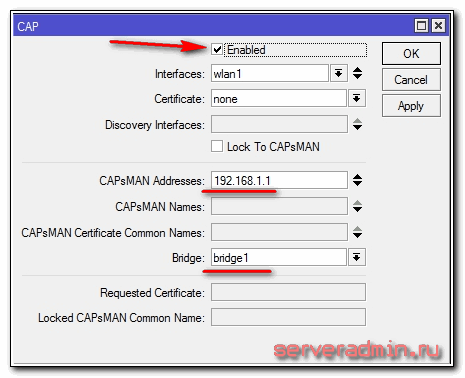
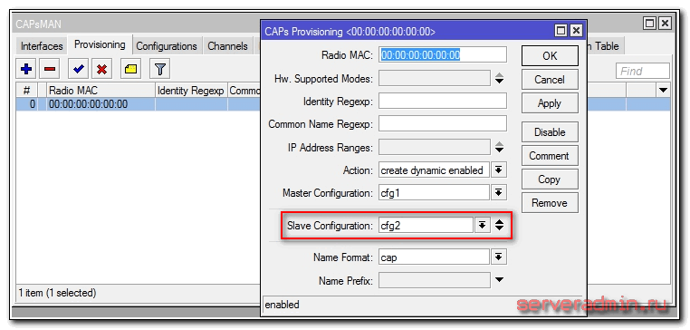

Бесшовный wifi роуминг с помощью capsman v2 в Микротик
Обновлено: 19.10.2016 Mikrotik 77 комментариев 168,444 Views
Уже не раз я касался темы интересных и многофункциональных роутеров, подходящих для дома, малого и среднего бизнеса. Сегодня рассмотрим настройку в mikrotik функционала capsman для создания единой бесшовной wifi сети, состоящей из множества точек доступа. Я уже писал об этом, но прошло более года и кое-что изменилось, полезно будет еще раз посмотреть и проверить на реальном примере.
Если у вас есть желание научиться работать с роутерами микротик и стать специалистом в этой области, рекомендую пройти курсы по программе, основанной на информации из официального курса MikroTik Certified Network Associate. Все подробности читайте ниже.
Как я уже сказал, у меня есть материал на тему настройки capsman в mikrotik. В наше время в связи со скоростью развития информационных технологий информация очень быстро устаревает. И хотя статья все еще актуальна, ее регулярно читают и используют, сейчас есть что к ней добавить.
Вышла новая версия технологии Controlled Access Point system Manager (CAPsMAN) v2. Я расскажу немного о ней. В своей работе буду опираться на опыт предыдущей статьи и на официальный Manual:CAPsMAN с сайта производителя микротиков.
В моем распоряжении будут 2 роутера RB951G-2HnD, которые настроены в соответствии с моими рекомендациями на эту тему. Рекомендую на всякий случай ознакомиться с ними, чтобы было общее представление о базовых настройках роутеров. На одном из этих роутеров я настрою контроллер точек доступа, другую подключу к этому контроллеру. Обе точки образуют единую бесшовную wifi сеть с автоматическим переключением клиентов к ближайшей точке.
Примера из двух точек доступа будет достаточно для общего представления о работе технологии. Дальше эта настройка линейно масштабируется на необходимое количество точек доступа.
Для начала расскажу, что такое capsman v2 и чем он отличается от первой версии. Сразу стоит сказать, что совместимости между двумя версиями нет. Если у вас контроллер v2, то к нему могут подключаться только точки доступа с такой же версией. И наоборот — если у вас точки v2, подключиться к контроллеру первой версии не получится.
CAPsMAN v2 имеет другое название пакета в системе — wireless-cm2. Он появился в системе начиная с версии RouterOS v6.22rc7. У предыдущей версии название — wireless-fp, он появился в версии v6.11. Если у вас нет нового пакета, обновите версию прошивки mikrotik до последней.
Список нововведений capsman v2:
Если у вас в сети уже настроен capsman, то разработчики предлагают следующий путь обновления всей вашей сети до v2:
Есть более простой путь, если вам не критичен простой сети на некоторое время. Одновременно запускайте обновление на всех роутерах — и на контроллере и на точках. Как только они обновятся, все заработает на новой версии.
Сразу предупреждаю, если возникнут вопросы на эту тему. Я лично не проверял обновление до версии v2, не было в этом необходимости.
Настройка контроллера wifi сети
Переходим от теории к практике. Первым делом настроим контроллер capsman перед подключением к нему точек доступа. Как я уже говорил, обновляем перед этим систему. У нас должен быть установлен и активирован пакет wireless-cm2.
Чтобы активировать функцию контроллера беспроводной сети, идем в раздел CAPsMAN, нажимаем на Manager и ставим галочку Enabled.
Прежде чем продолжить настройку, расскажу немного о принципе работы системы. В сети настраивается контроллер управления точками доступа. К нему подключаются отдельные wifi точки и получают с него настройки. Каждая подключенная точка доступа образует виртуальный wifi интерфейс на контроллере. Это позволяет стандартными средствами управлять траффиком на контроллере.
Наборы настроек на контроллере могут быть объединены в именованные конфигурации. Это позволяет гибко управлять и назначать различные конфигурации разным точкам. К примеру, можно создать группу с глобальными настройками для всех точек доступа, но при этом отдельным точкам можно задать дополнительные настройки, которые будут перезаписывать глобальные.
После подключения управляемой точки к мастеру сети, все локальные wireless настройки на клиенте перестают действовать. Они заменяются настройками capsman v2.
Продолжим настройку контроллера. Создадим новый радиоканал и укажем его параметры. Идем на вкладку Channels, жмем на плюсик и указываем параметры.
Описание настроек Channels
|
Name |
имя канала |
|
Frequency |
частота в MHz, она же номер канала 1-12 |
|
Width |
полоса в MHz |
|
Band |
режим работы |
|
Extension Channel |
настройки extension channel, подробнее о них тут |
|
Tx. Power |
мощность сигнала в Dbm |
Выпадающего списка в настройках нет и это неудобно. Подсмотреть настройки можно в текущих параметрах Wifi, если он уже настроен.
Продолжаем настройки на вкладке Datapaths. Жмем плюсик и задаем параметры.
Описание параметров Datapath
|
Bridge |
в какой бридж будет добавлен интерфейс в качестве порта |
|
Bridge Cost |
значение bridge port cost, испольуется только если актвен параметр bridge |
|
Bridge Horizon |
значение bridge horizon, испольуется только если актвен параметр bridge |
|
Local Forwarding |
управляет параметром forwarding mode |
|
Client To Client Forwarding |
управляет параметром client-to-client forwarding между клиентами управляемой точки доступа, если активен параметр local-forwarding этим параметром управляет сама точка доступа, в противном случае контроллер |
|
Vlan Mode |
управляет назначением VLAN tag для интерфейса |
|
Vlan Id |
какой VLAN ID будет назначен интерфейсу, если vlan-mode установлен в use tag |
Немного задержусь на параметре local-forwarding. Если он активирован, то всем траффиком клиентов точки доступа управляет сама точка. И большинство настроек datapath не используются, так как контроллер не управляет траффиком. Если этот параметр не установлен, то весь трафик с клиентов поступает на контроллер сети и там управляется в зависимости от настроек. Если вам необходим траффик между клиентами, то укажите параметр Client To Client Forwarding.
Переходим к настройкам безопасности. Открываем вкладку Security Cfg. и жмем плюсик.
Описание настроек Securiry
|
name |
имя конфигурации |
|
Authentication type |
выбор типа авторизации |
|
Encryption |
выбор алгоритма unicast encryption |
|
Group Encryption |
выбор алгоритма group encryption |
|
Passphrase |
WPA or WPA2 pre-shared key |
|
Eap Methods |
выбор типа авторизации |
|
Eap Radius Accounting |
использование авторизации Radius |
|
TLS Mode |
управление использования сертификата |
|
TLS Certificate |
выбор сертификата, если его использование активировано в предыдущем параметре |
Пришло время объединить созданные ранее настройки в единую конфигурацию. Таких конфигураций может быть несколько с разными настройками. Для примера достаточно и одной. Идем на вкладку Configurations и жмем плюсик.
На первой вкладке Wireless указываем имя конфигурации, режим ap и имя SSID будущей бесшовной wifi сети. На остальных вкладках просто выбираем созданные ранее настройки.
Основные настройки mikrotik контроллера capsman v2 закончены. Теперь нужно создать правила распространения этих настроек. Как я уже ранее писал, разным точкам можно предавать разные конфигурации. Контроллер может идентифицировать точки доступа по следующим параметрам:
Так как в своем случае я не использую сертификаты, создадим правило распространения настроек на основе MAC адреса. А так как у меня единая конфигурация для всех точек, то и правило распространения будет самое простое. Сделаем его. Переходим на вкладку Provisioning и жмем плюсик.
Описание настроек Provisioning
|
Radio Mac |
MAC адрес точки доступа |
|
Hw. Supported Modes |
не понял для чего это, в документации пусто |
|
Identity Regexp |
в документации тоже ничего нет |
|
Commom Name Regexp |
и про это нет |
|
IP Address Ranges |
и про это тоже |
|
Action |
выбор действия с радио интерфейсом после подключения |
|
Master Configuration |
выбор оснвной конфгиурации, которая будет применена к создаваемому радио интерфейсу |
|
Slave Configuration |
второстепенная конфигурация, можно подключить еще один конфиг клиентам |
|
Name Format |
определяет синтаксис названий для создаваемых CAP интерфейсов |
|
Name Prefix |
префикс для имен создаваемых CAP интерфейсов |
На этом настройка контроллера capsman v2 закончена, можно подключать wifi точки доступа к нему.
В моем повествовании участвуют две точки доступа с адресами 192.168.1.1 (Mikrotik) и 192.168.1.3 (CAP-1), соединенные между собой по ethernet кабелю. Первая из них контроллер, вторая простая точка. Обе точки видят друг друга в локальной сети. Wifi интерфейс контроллера так же как и обычной точки подключается к capsman и берет у него настройки. То есть контроллер является одновременно и контроллером и рядовой точкой доступа. Даже комбинация из двух точек организует полноценную бесшовную wifi сеть на всей площади, которую покрывают их радио модули.
Подключение точек доступа CAP к контроллеру CAPsMAN возможно по двум разным протоколам — Layer 2 или Layer 3. В первом случае точки доступа должны быть расположены физически в одном сегменте сети (физической или виртуальной, если это L2 туннель). В них не обязательно настраивать ip адресацию, они найдут контроллер по MAC адресу.
Во втором случае подключение будет по протоколу IP (UDP). Нужно настроить IP адресацию и организовать доступность точек доступа и контроллера по IP адресам.
Для начала подключим отдельную wifi точку. Подключаемся к ней через winbox и переходим в раздел Wireless. Там нажимаем на CAP и указываем настройки.

Описание настроек CAP
|
Interfaces |
интерфейс, которым будет управлять контроллер |
|
Certificate |
сертификат для авторизации, если используется |
|
Discovery Interfaces |
интерфейс, по которому CAP будет искать контроллер |
|
Lock to CAPsMAN |
привязать точку к конкретному мастеру |
|
CAPsMAN Addresses |
IP адрес по которому CAP будет искать контроллер |
|
CAPsMAN Names |
имя контроллера, который будет искать CAP, если не указано ничего, то поиск по имени не осуществляется |
|
CAPsMAN Certificate Commo Names |
список CommonNames сертификатов на контроллере, которые будет проверять CAP при подключении |
|
Bridge |
bridge, к которому будет подключаться интерфейс, когда включена опция local forwarding |
В моем случае я указал конкретный IP контроллера, так как ip адресация настроена. Если вы хотите по l2 подключать точки к контроллеру, то поле с адресом капсман оставляем пустым, а в Discovery Interfaces выбираете интерфейс, который подключен к контроллеру. Если они в одном физическом сегменте сети, то точка автоматически найдет мастер.
Сохраняем настройки и проверяем. Если точка доступа корректно подключится к контроллеру, то на самой точке будет такая картина:
А на контроллере в списке Interfaces появится только что созданный радио интерфейс подключенной точки доступа:
Если у вас по точка доступа упорно не подключается к контроллеру и вы никак не можете понять, в чем проблема, то первым делом проверьте, что у вас активированы на всех устройствах пакеты wireless-cm2. У меня получилось так, что после обновления на одной из точек был включен пакет wireless-fp, вместо необходимого. Точка доступа ни в какую не хотела подключаться к контроллеру, что я только не пробовал. Я и ее контроллером делал, другая не хотела к ней подключаться. Я сбросил все настройки, но и это не помогло. Когда совсем отчаялся решить проблему, проверил версию пакета и обнаружил, что она не та.
Проделаем теперь то же самое на самом mikrotik контроллере — подключим его wifi интерфейс к capsman v2. Делается это абсолютно так же, как только что проделали на отдельной точке wifi. После подключения смотрим картинку на контроллере. Должно быть примерно так:
Все, основные настройки закончены. Теперь эту конфигурацию можно разворачивать дальше на новые точки доступа и покрывать большую площадь единой бесшовной wifi сетью. Все подключенные клиенты будут отображаться на вкладке Registration Table с указанием точки, к которой они подключены.
Для удобного и наглядного анализа сети рекомендуется придумать осмысленную схему назначения имен точкам доступа и радио интерфейсам.
Проверка работы бесшовного wifi роуминга
Теперь можно взять телефон на андроиде, поставить на него программу Wifi Analyzer и походить по всей покрываемой wifi территории, протестировать мощность сигнала, переключение от точке к точке. Переключение происходит не сразу, как только сигнал новой точки будет сильнее предыдущей. Если разница не очень большая, то переключение к новой не произойдет. Но как только разница начинает быть существенной, клиент перескакивает. Эту информацию можно наблюдать на контроллере.
После анализа зоны покрытия можно подкорректировать мощность точек доступа. Иногда может быть полезно настроить разную мощность на разных точках, в зависимости от схемы помещений. Но в общем и целом даже в базовой настройке все работает вполне стабильно и качественно. К данным моделям микротик (RB951G-2HnD) могут подключаться и комфортно работать по 10-15 человек. Дальше могут быть нюансы в зависимости от нагрузки. Эти цифры я привел из своих примеров реальной работы.
2 сети в capsman на примере гостевой wifi
Рассмотрим для примера одну распространенную ситуацию, которую можно реализовать с помощью технологии capsman. У нас настроена бесшовная сеть wifi с авторизацией по паролю. Нам нужно на эти же точки доступа добавить еще одну гостевую сеть для открытого доступа. В одиночном mikrotik это делается с помощью Virtual AP. Сделаем то же самое в capsman.
Для этого нужно добавить новую настройку безопасности. Идем в Security Cfg. и создаем настройку для доступа без пароля. Называем ее open.
Создаем еще одну конфигурацию, в которой все остальные настройки оставляем те же самые, только меняем SSID и настройку безопасности.
Идем на вкладку Provisioning, открываем ранее созданную конфигурацию и добавляем туда в параметре Slave Configuration нашу вторую конфигурацию, которую мы только что сделали.

Сохраняем изменения. Тут я подождал несколько секунд, новая настройка не распространилась на точки. Я не стал ждать, зашел на каждую точку и переподключил ее к контроллеру. Возможно этого не нужно было делать, а надо было подождать. Не знаю, сделал как есть. Новая настройка распространилась и в каждой точке доступа появилась новая сеть типа Virtual AP с открытой wifi сетью.
На контроллере при этом добавились еще 2 виртуальных интерфейса, по одному на каждую новую сеть.
Проверил на всякий случай работу — все в порядке. Подключает клиентов одновременно к обоим сетям и позволяет работать.
Я для примера работы Virtual AP в capsman рассмотрел текущую ситуацию. Здесь клиентов гостевой сети подключает в тот же бридж и адресное пространство, что и пользователей закрытой сети. По хорошему нужно сделать дополнительные настройки:
После этого всех подключенных к открытой wifi сети будет отправлять в отдельный бридж, где будет свой dhcp сервер и адресное пространство, отличное от основной сети. Не забудьте в dhcp проверить настройки шлюза и dns сервера, которые вы будете передавать клиентам.
Подведем итог проделанной работы. На примере двух точек доступа Mikrotik RB951G-2HnD мы настроили бесшовный wifi роуминг на покрываемой этими точками площади. Площадь эта легко расширяется дополнительными wifi точками любой модели микротик. Они не обязательно должны быть одинаковыми, как это, к примеру, реализовано в некоторых конфигурациях Zyxell, которые мне доводилось настраивать.
В этом примере я рассмотрел практически самую простую конфигурацию, но при этом расписал все настройки и принцип работы. На основе этих данных легко составить и более сложные конфигурации. Здесь нет какого-то принципиального усложнения. Если понять, как это работает, то дальше уже можно работать и делать свои конфигурации.
Трафиком с точек доступа можно управлять так же, как и с обычных интерфейсов. Работает весь базовый функционал системы — firewall, маршрутизация, nat и т. д. Можно делать бриджы, делить адресное пространство и многое другое. Но стоит учитывать, что при этом трафик будет весь идти через контроллер. Нужно это понимать и правильно рассчитывать производительность и пропускную способность сети.
Мне самому было бы очень любопытно сравнить технологию capsman v2 с аналогичными решениями от других производителей. Своими руками я настраивал только конфигурации от Zyxell для решения похожих задач, но там все гораздо хуже работает, неудобно использовать и управлять. В микротике выходит и дешевле, и быстрее, и удобнее. Больше бесшовного роуминга я не настраивал. Если у кого-то есть подобный опыт, прошу поделиться в комментариях. Тема эта актуальна на сегодняшний день.
Полезные отзывы о работе capsman
Немного полезной информации из отзывов к статье от реальных пользователей технологии capsman:
Владимир, хорошая статья! Много букв полезных!:) При настройке capsman на предприятии ссылался на твою статью — многое почерпнул, но немного изменил. Изменения коснулись вкладки «Channels» — убрал позицию Frequency т.к. использование одной частоты на всех точках не рекомендовал бы, потому что рядом стоящие точки начинают «захлёбываться» и соответственно возникают обрывы соединения… Мои пользователи жаловались на низкий уровень сигнала при нахождении рядом с точкой доступа (а на самом деле были подключены к точке с плохим уровнем сигнала)… для того чтобы пользователи «прыгали» с точки на точку, которая имеет лучше сигнал, решил сделать ограничение по порогу уровня сигнала, сделав запись в вкладке AccessList. Значения внёс в SignalRange => -71..120 Interface=> all Action => accept, этим добился того что при достижении сигнала ниже -71 абонент «покидает» точку:) Значение -71 взято не случайно (минимальный уровень сигнала при скорости 54Mbit) Также во вкладке Provisioning изменил значение NameFormat, вместо cap поставил identity (при подключении к контролеру показывает название точки которое прописано в system->identity устройства), у кого есть реализация в домашних устройствах, тому может и не надо это, а у кого точки разбросаны по большой территории и их много — будет полезно:) В общем спасибо большое и извени за много букв:)
И еще один отзыв:
Статья очень хорошая, но я бы ее дополнил/переделал в части гостевой wifi сети:
1) разделил 2 wifi сети по разным радиоканалам.
2) Для безопасности я бы отделил гостевую сеть от основной. Учитывая, что у вас гостевая сеть без пароля поломать вас захочет каждый студент со смартфоном. Создается бридж (bridge_open), назначается бриджу ip адрес из другой сети (192.168.200.1/24), создается dhcp-pool (192.168.200.10-192.168.200.100), поднимается на созданном бридже dhcp сервер, создаем еще один Datapaths (Datapaths_open) в котором указываем созданный бридж (bridge_open), для конфигурации гостевой сети cfg2 применяем Datapaths_open. Далее настраиваем NAT и firewall, чтобы из гостевой сети (192.168.200.0/24) в интернет доступ был, а в локальную рабочую блокировался (drop forward из 192.168.200.0/24 в локальную сеть).